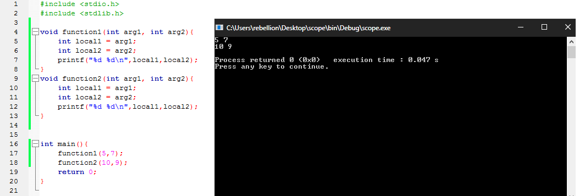
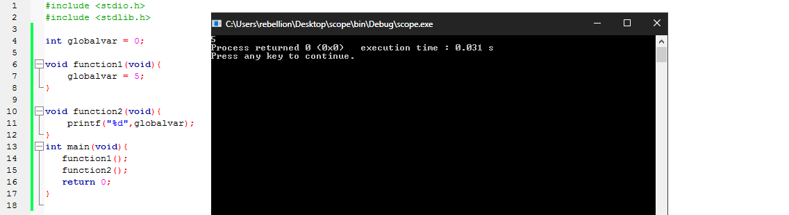
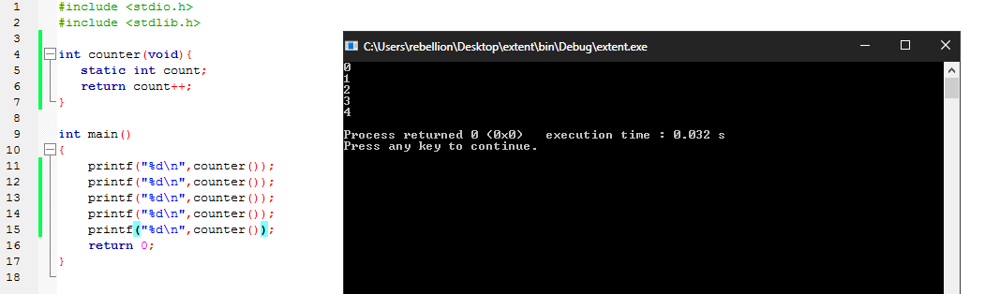

تحدد النطاقات كيفية استخدام اجزاء البرنامج و المدي الخاص بها. كمثال تصف النطاقات للدوال و المتغيرات مدة حياتها من حيث تخصيص ذاكرة لها و تخزينها و متي سيتم تفريغ تلك الذاكرة كما تؤثر النطاقات علي الطريقة التي تتفاعل بها الوظائف و البيانات مع بعضها البعض، و هي عنصر اساسي في تصميم لغة C.
المتغيرات المعرفة داخل الدوال تمتلك نطاق محلي بشكل اساسي. هذا يعني ان نطاق استخدام ذلك المتغير لا يمكن ان يتم خارج حدود الـ Block الذي تم تعريفه فيها و ينطبق نفس الأمر علي وسائط الدالة. كمثال استخدام الوسيط arg1 او arg2 او المتغيرات المحلية local1 او local2 خارج حدود الدالة سينتج عنه خطأ بسبب محاولة استخدام معرفات خارج نطاقها out-of-scope.
void afunction(int arg1, int arg2){ double local1; for(int local2 = 0; local2<5; local2+=2){ printf("%d\n",local2); } /* local2 goes out-of-scope here */}/* arg1,arg2,local1 go out-of-scope here */لاحظ النطاق الخاص بالمتغير local2 والذي يقتصر مداه داخل الـ Block الخاص بحلقة for فإن كنا نريد استخدامه بعد الانتهاء من تنفيذ الحلقة يمكننا تعريفه قبل بداية الحلقة بالشكل التالي:
xxxxxxxxxxvoid afunction(int arg1, int arg2){ double local1; int local2; for(local2 = 0; local2<5; local2+=2){ printf("%d\n",local2); } printf("%d",local2);}/* arg1,arg2,local1 go out-of-scope here */مع ذلك وجود المعرفات ذات النطاق المحلي يفيد في عدة استخدامات منها اتاحة القدرة للمبرمج في استخدام نفس اسم المتغير او الوسيط في دوال مختلفة. المثال التالي يوضح استخدام نفس المعرفات داخل دالتين مختلفين:
xvoid function1(int arg1, int arg2){ int local1 = arg1; int local2 = arg2; printf("%d %d\n",local1,local2);}void function2(int arg1, int arg2){ int local1 = arg1; int local2 = arg2; printf("%d %d\n",local1,local2);}int main(){ function1(5,7); function2(10,9); return 0;}
و المتغيرات المحلية Local Variables تمتلك مدي تلقائي Automatic Extent مما يعني ان بداية وجودها تكون مع نقطة التعريف عنها و نهايتها تكون بنهاية الـ Block الذي تم التعريف عنها داخله. في نقطة التعريف عنها يتم تعيين مساحة في الذاكرة داخل المكدس و يتم ادارة هذه المساحة بشكل تلقائي بدون تدخل من المبرمج. و مع نهاية الـ Block يتم تفريغ تلك المساحة من الذاكرة لذلك لا يمكننا استخدام قيمة المتغير بعدها.
مع ملاحظة ان في حالة التعريف عن المتغير بدون تعيين قيمة له مثال
xxxxxxxxxxint var;و ليس:
xxxxxxxxxxint var = 5;فسيحمل المتغير قيمة غير محددة undefined value حتي يتم تعيين قيمة له فيما بعد لذلك يتم اعتبار تعيين قيمة مبدئية طريقة جيدة للتعريف عن المتغيرات مثال:
xxxxxxxxxxint var = 0;
المتغيرات الخارجية يتم تعيينها خارج نطاق الدوال. مما يترتب عليه اتاحتها لكل الدوال وليس دالة بعينها. و الدوال نفسها تعتبر معرفات خارجية حيث لا تسمح لغة C بتعريف دوال داخل دوال أخري.
في العادة المعرفات الخارجية يمكن الوصول لها من خلال البرنامج بالكامل بسبب امتلاكها نطاق خارجي. مثال يمكن استدعاء الدوال عن طريق دوال اخري او تعيين و استخدام قيمة للمتغيرات الخارجية من اي مكان فالبرنامج.
اثناء عملية التجميع يتم تحويل كل ملف مصدري source file يمتلك الأمتداد
c.الي وحدة كائنية object module و يتم تجميعهم فيما بعد بواسطة المُربط Linker في هيئة ملف تنفيذي executable file. و يسمح المُربط للمعرفات الخاصة بالمتغيرات الخارجية و الدوال بأن يتم مشاركتها بين الوحدات الكائنية المنفصلة. بينما المعرفات و الدوال ذات النطاق المحلي لا يسمح بمشاركتها و لذلك تبقي خاصة بملف مصدري معين. سيتم شرح عملية التجميع تفصيلا فالأجزاء القادمة بإذن الله.
و يتم استخدام الكلمة المحجوزة extern للتعريف عن متغير خارجي سيتم استخدامه داخل ملف أخر. مثال:
xxxxxxxxxx/* File one.c: */int globalvar; /* external variable definition */extern double myvariable; /* external variable declaration (defined elsewhere) */void myfunc(int idx); /* external function prototype (declaration) */xxxxxxxxxx/* File two.c: */double myvariable = 3.2; /* external variable definition */void myfunc(int idx)/* Function definition */{ extern int globalvar; /* external variable declaration */...}لاحظ عدم الحاجة لستخدام extern اثناء كتابة النموذح المبدئي prototype الخاص بالدالة myfunc بسبب امتلاك الدوال نطاق خارجي بالفعل.
الدوال و المتغيرات الخارجية تمتلك مدي ثابت static extent. مما يعني ان المساحة الخاصة بهم في الذاكرة يتم تعيينها قبل البدء في تنفيذ البرنامج ( قبل البدء في تنفيذ الدالة main ) و حتي انتهاء تنفيذه. و يتم تعيين القيمة 0 للمتغيرات الخارجية التي لم يتم تعيين قيمة لها اثناء تعريفها ( مما يختلف عن المتغيرات ذات النطاق المحلي التي تمتلك قيمة غير محددة ). و يتم عادة استخدام المتغيرات الخارجية كطريقة للتواصل بشكل اسهل بين اجزاء البرنامج و بعضها. المثال التالي يوضح استخدام المتغيرات الخارجية.
xxxxxxxxxxint globalvar = 0;void function1(void){ globalvar = 5;}void function2(void){ printf("%d",globalvar);}int main(void){ function1(); function2(); return 0;}
لاحظ كيف يمكننا التغيير و الوصول الي قيمة المتغير الخارجي globalvar من دوال منفصلة.
الكلمة المحجوزة static تسمح للمتغيرات المحلية بالأحتفاظ بنطاقها المحلي و لكن تعطيها مدي ثابت Static extent. و يتم تعين قيمة 0 عند التعريف عن المتغيرات من هذا النوع بشكل تلقائي و يتاح لها الأحتفاظ بقيمتها بعد الإنتهاء من تنفيذ الدالة، المثال التالي يوضح استخدام static.

لاحظ احتفاظ المتغير count بقيمته و زيادتها في كل مرة يتم فيها استدعاء الدالة. كما تعطي الكلمة static للدوال و المتغيرات الخارجية داخل الملف المصدري الواحد خصوصية عن باقي الملفات المصدرية بعكس الكلمة extern, في المثال التالي لا علاقة للمتغير myvariable و الدالة myfunc في الملف one.c بالمتغير و الدالة في two.c ولكل منهم قيمته و مكانه الخاص في الذاكرة:
xxxxxxxxxx/* File one.c */static double myvariable;static void myfunc(int idx);xxxxxxxxxx/* File two.c */static int myvariable; /* no conflict with file one.c */static int myfunc(int idx); /* no conflict */